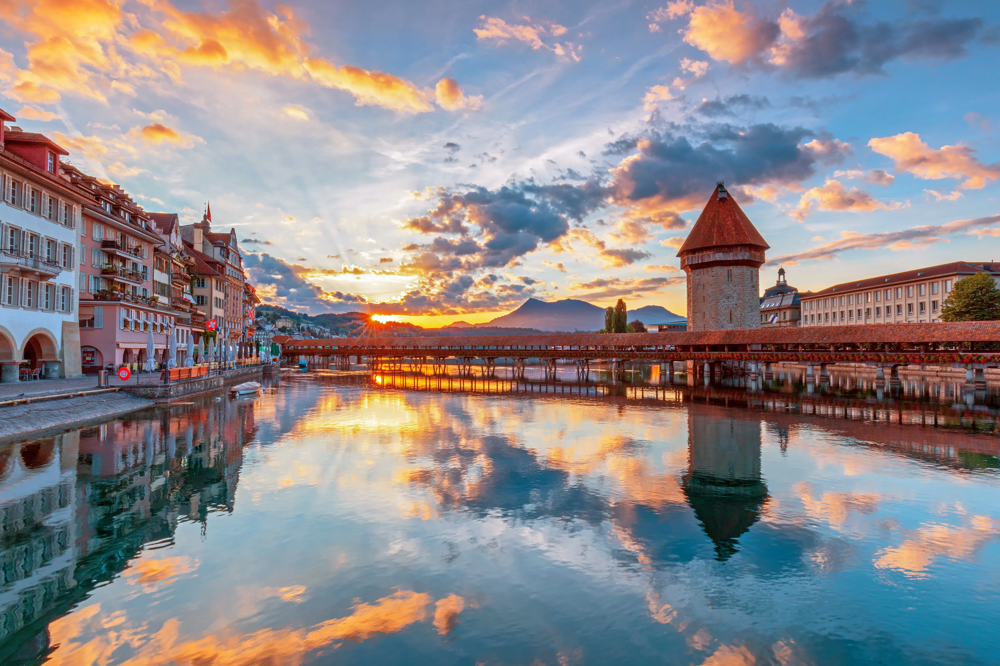
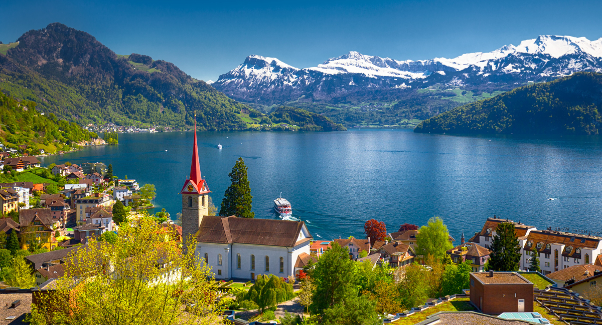
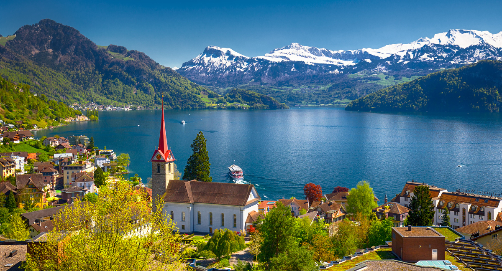

Vierwaldstättersee
Lake Lucerne (German: Vierwaldstättersee, literally 'Lake of the four forested settlements' (in English usually translated as forest cantons), French: lac des Quatre-Cantons, Italian: lago dei Quattro Cantoni) is a lake in central Switzerland and the fourth largest in the country.
The lake has a complicated shape, with several sharp bends and four arms. It starts in the south north bound Reuss Valley between steep cliffs above the Urnersee from Flüelen towards Brunnen to the north before it makes a sharp bend to the west where it continues into the Gersauer Becken. Here is also the deepest point of the lake with 214 m (702 ft). Even further west of it is the Buochser Bucht, but the lake sharply turns north again through the narrow opening between the Unter Nas (lower nose) of the Bürgenstock to the west and the Ober Nas (upper nose) of the Rigi to the east to reach the Vitznauer Bucht. In front of Vitznau below the Rigi the lake turns sharply west again to reach the center of a four-arm cross, called the Chrütztrichter (Cross Funnel). Here converge the Vitznauer Bucht with the Küssnachtersee from the north, the Luzernersee from the west, and the Horwer Bucht and the Stanser Trichter to the south, which is to be found right below the northeast side of the Pilatus and the west side of the Bürgenstock. At the very narrow pass between the east dropper of the Pilatus (called Lopper) and Stansstad the lake reaches its southwestern arm at Alpnachstad on the steep southern foothills of the Pilatus, the Alpnachersee. The lake drains its water into the Reuss in Lucerne from its arm called Luzernersee (which literally translates as Lake of Lucerne).
The entire lake has a total area of 114 km² (44 sq mi) at an elevation of 434 m (1,424 ft) a.s.l., and a maximum depth of 214 m (702 ft). Its volume is 11.8 km³. Much of the shoreline rises steeply into mountains up to 1,500 m above the lake, resulting in many picturesque views including those of the mountains Rigi and Pilatus.
Tourism
On the way south, the English discovered the mountains of central Switzerland. Several spa and bathing resorts such as Weggis or Gersau were created. In 1871, the very first rack railway in Europe, the Vitznau-Rigi Railway, was opened. In 1889 the steepest cog railway in the world was built from Alpnachstad to Mount Pilatus. Mark Twain described an ascent to the Rigi, which led to the blossoming of Swiss tourism in the United States in the 19th century. One of the largest steamship fleets in Europe operates with five steamships on Lake Lucerne.
In the area surrounding the lake and on terraces at medium height (for example Morschach and Seelisberg) there are numerous places for tourists. The Rigi, Pilatus, the Bürgenstock, the Stanserhorn, the Buochserhorn, and the two legends, the Urirotstock and the Fronalpstock are attractive panoramic mountains near Lake Lucerne. Most of them can be reached by mountain railways, some of which have their valley station near boat stations on the lake.
There are numerous locations on the lake that are important in Swiss cultural and tourism history: Rütli, Tellsplatte, Tell Chapel, Carving Tower of Stansstad, Neu-Habsburg, Schillerstein, Treib, Astrid Chapel (Küssnacht) and Meggenhorn Castle.
Glimpse Of Lucerne :
 
